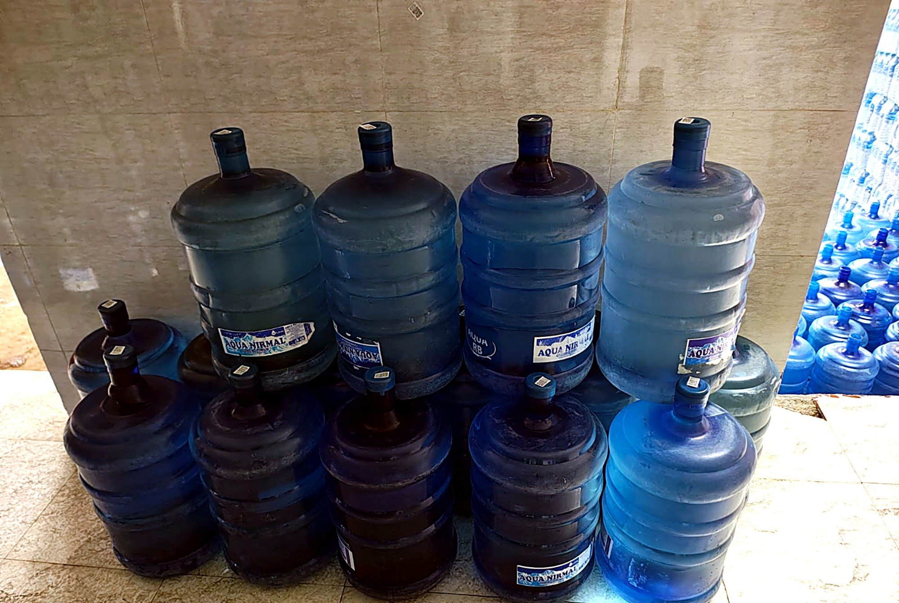

Aqua Nirmal Quality Khane Pani (Pra.) Ltd. supplies multi-stage purified water in sanitized returnable jars, delivered on your schedule. Bulk orders get our best negotiable rate.


Clean drinking water should be completely hassle-free. Here is how we deliver daily fresh batches.
Pick a jar size and choose a one-time order or an automatic weekly/monthly delivery schedule.
Each jar is sanitized, filled fresh from that morning's RO batch, sealed with tamper-proof cap.
Our rider brings full jars to your kitchen or office and swaps your empty jar on the spot.
Subscribers never worry about running out — the next jar arrives precisely on your schedule.
Explore our hygienic facility, massive storage capacity, and delivery fleet in interactive 3D. Move your mouse over any card to tilt it, or click to zoom.

Over 2,000 sanitized, food-grade 20L jars staged daily to ensure non-stop supply for Kathmandu households and commercial contracts.

High-pressure semi-permeable membranes strip dissolved solids, heavy metals, and micro-contaminants.

Every returnable jar undergoes high-pressure internal jet cleaning, ozone rinse, and inspection.
Food-grade stainless steel holding tanks keep mineral-balanced water sterile prior to jar bottling.

Packaged with tamper-evident caps and leak-tested to protect purity from factory floor to your dispenser.

Dedicated delivery vehicles loaded early morning for scheduled delivery runs across town.

Organized by regional routes for rapid loading, ensuring morning delivery slots are met punctually.

Our registered facility in Gokarneshwor Municipality. Walk in or call for immediate refills and commercial inquiries.
Clean water with transparent rates. Subscriptions save you time and money.
Rs 15 / bottle
Rs 30–50 / jar, negotiable
Rs 30 / can
Enter your neighbourhood or tole name to check today's active delivery slots.
Delivering consistently to homes, offices, schools, and restaurants across Kathmandu.
"The subscription means I never notice the jar is empty until the new one is already waiting at the door. Seamless service."
— Sunita Sharma, Gokarneshwor"Switched our IT office pantry to Aqua Nirmal. Clear billing, consistent TDS, and the taste is noticeably crisp and pure."
— Rajesh Shakya, Jorpati"Riders are courteous, punctual, and always take back the empty jars carefully. Reliable service every single week."
— Bishal KC, Kapan